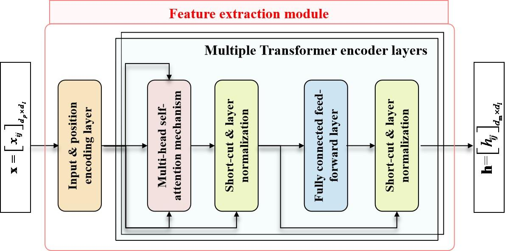
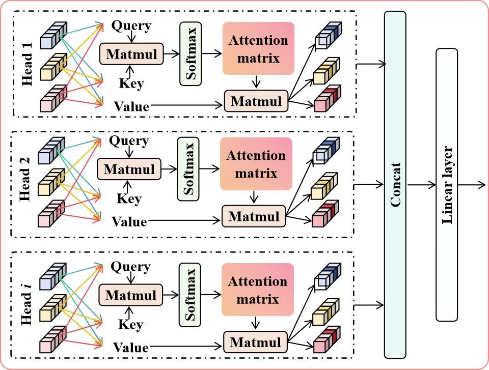
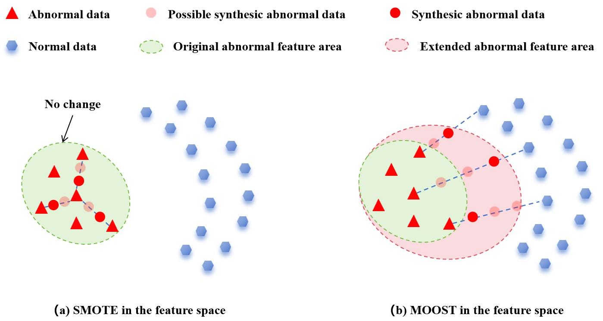
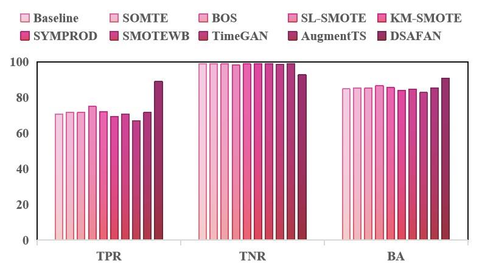
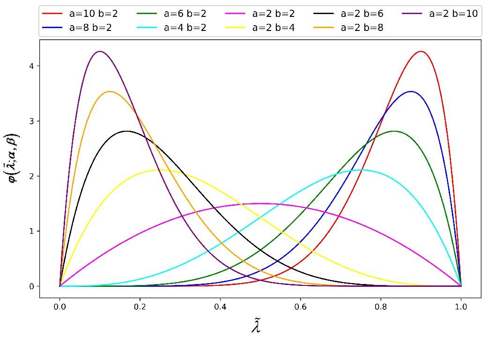

Abstract
To address the challenges of enhancing feature learning from highly imbalanced industrial data and achieving superior generalization, this paper develops a novel deep neural network architecture — the deep self-attention feature augmentation network (DSAFAN). The majority-oriented over-sampling technique (MOOST) is inserted into the architecture as an auxiliary tool for minority-class feature augmentation.
Since it is extremely difficult to enhance the completeness of minority-class data, MOOST generates out-of-distribution synthetic data with abnormal characteristics under the guidance of normal data, effectively expanding the advantageous region occupied by existing anomalies. Furthermore, DSAFAN leverages a multi-head self-attention mechanism for feature extraction, significantly improving temporal feature learning for complex data.
The effectiveness of the proposed methods is validated through comprehensive experiments on real-world aero-engine operation data.
Keywords: aero-engine anomaly detection; inter-class imbalance; inter-class overlap; majority-oriented over-sampling; deep self-attention feature-augmentation network
Why imbalanced aero-engine data is hard
Real aero-engine anomalies are rare, incomplete, and early-stage deviations overlap heavily with normal operation.
Inter-class imbalance
Deep models trained with cross-entropy loss are dominated by the abundant normal samples; the scarce abnormal samples are effectively ignored during optimization, leaving anomaly detection poor.
Inter-class overlap
Early-stage anomalies barely deviate from normal data. Augmenting directly in the raw space can push synthesized samples into the “danger zone”, producing mislabeled noise that misleads training.
Incomplete abnormal data
Collected anomalies are only a fraction of all possible fault modes. Traditional in-distribution augmentation cannot synthesize out-of-distribution anomalies near decision boundaries, limiting generalization.
Complex temporal patterns
Aero-engine monitoring data is multi-dimensional time series whose parameter relationships are highly complex, making meaningful abnormal patterns hard to extract directly.
Key contributions
A new supervised framework (DSAFAN)
Suppresses inter-class overlap and balances the loss between minority and majority classes, directly addressing inter-class imbalance.
MOOST as a plug-in module
MOOST integrates seamlessly into deep architectures as a feature-augmentation module, effectively eliminating biased learning in imbalanced scenarios.
Majority-guided outward synthesis
Guided by the relatively complete majority-class data, MOOST synthesizes minority data outward to extend their advantageous zones, boosting generalization.
Real-world validation
Comprehensive experiments on real aero-engine operation data from 63 engines demonstrate DSAFAN's superior detection performance.
The DSAFAN framework
DSAFAN has three modules: a multi-head self-attention feature extractor, the MOOST feature-augmentation module, and a Softmax classifier trained on a balanced feature set.


MOOST: majority-oriented over-sampling
Instead of interpolating between two abnormal samples (SMOTE), MOOST anchors each abnormal sample to its nearest normal neighbors and synthesizes outward, so new samples extend the abnormal region rather than falling into the overlapping danger zone.

MOOST · 5 steps
- Compute the Euclidean distances from abnormal feature h to all normal features and sort them into ZNh.
- Take the first five normal neighbors of h to form the 5-nearest-neighbor set ZN5h.
- Randomly pick a normal feature u from the set, and draw an interpolation factor λ from a Beta distribution Beta(α, β).
- Synthesize the new abnormal feature hNew = h + λ(u − h) = (1 − λ)h + λu, which lies outside the region currently occupied by existing anomalies.
- Iterate steps 1–4 until all classes are balanced in the training set; the module is active during training and deactivated at inference.
Finally, a Softmax classifier (SMC) — a single linear layer with Softmax — is trained with binary cross-entropy on the balanced feature set to learn an unbiased decision boundary.
Experimental setup
The method is evaluated on a real-world dataset from 63 aero-engines of an Asian airline. The key characteristic parameters — delta exhaust-gas temperature (DEGT), delta high-pressure rotor speed (DN2), delta fuel flow (DFF), and exhaust-gas temperature margin (EGTM) — are turned into samples by a sliding window (step 10), giving 1017 samples (954 normal / 63 abnormal) split by five-fold cross-validation.
DSAFAN is compared against a Baseline (deep self-attention network without re-sampling), six classical over-sampling methods (SMOTE, BOS, SL-SMOTE, KM-SMOTE, SyMProD, SMOTEWB), and two deep generative methods (TimeGAN, AugmentTS). Each fold is repeated 10 times; the mean TPR / TNR / BA is reported.
Results
DSAFAN achieves the best comprehensive detection performance, dramatically narrowing the TPR–TNR gap that plagues imbalanced learning.

DSAFAN's average TPR of 89.09% far exceeds the baseline (70.65%) and the eight over-sampling methods — a +14.04% gain over the second-ranked SL-SMOTE (75.05%). Its average BA of 90.87% is the best of all ten methods; compared with the baseline, SMOTE, BOS, SL-SMOTE, KM-SMOTE, SyMProD, SMOTEWB, TimeGAN and AugmentTS, DSAFAN improves BA by 6.06% / 5.58% / 5.57% / 4.24% / 5.40% / 6.84% / 6.11% / 8.12% / 5.61% respectively.
| Method | 1st | 2nd | 3rd | 4th | 5th | Average |
|---|---|---|---|---|---|---|
| Baseline | 86.15 | 75.38 | 79.23 | 59.17 | 53.33 | 70.65 |
| SMOTE | 92.31 | 80.00 | 73.85 | 57.50 | 55.00 | 71.73 |
| BOS | 92.31 | 80.77 | 75.38 | 54.17 | 55.83 | 71.69 |
| SL-SMOTE | 84.62 | 79.23 | 73.08 | 62.50 | 75.83 | 75.05 |
| KM-SMOTE | 86.92 | 79.23 | 77.69 | 59.17 | 57.50 | 72.10 |
| SyMProD | 86.92 | 75.38 | 73.08 | 60.00 | 50.83 | 69.24 |
| SMOTEWB | 88.46 | 73.85 | 79.23 | 59.17 | 52.50 | 70.64 |
| TimeGAN | 86.15 | 73.85 | 63.08 | 55.83 | 55.83 | 66.95 |
| AugmentTS | 81.54 | 70.77 | 73.85 | 68.33 | 63.33 | 71.56 |
| DSAFAN (ours) | 92.31 | 90.00 | 92.31 | 84.17 | 86.67 | 89.09 |
| Method | 1st | 2nd | 3rd | 4th | 5th | Average |
|---|---|---|---|---|---|---|
| Baseline | 99.01 | 98.64 | 99.58 | 97.80 | 99.79 | 98.96 |
| SMOTE | 99.11 | 98.74 | 99.32 | 97.54 | 99.58 | 98.85 |
| BOS | 98.85 | 98.69 | 99.42 | 97.80 | 99.74 | 98.90 |
| SL-SMOTE | 98.12 | 97.85 | 98.95 | 97.91 | 98.21 | 98.20 |
| KM-SMOTE | 98.90 | 98.53 | 99.53 | 97.75 | 99.47 | 98.83 |
| SyMProD | 99.16 | 98.69 | 99.58 | 97.70 | 98.95 | 98.82 |
| SMOTEWB | 98.90 | 98.59 | 99.37 | 97.80 | 99.74 | 98.88 |
| TimeGAN | 98.90 | 98.59 | 99.11 | 97.02 | 99.16 | 98.55 |
| AugmentTS | 99.11 | 98.69 | 99.27 | 97.80 | 99.89 | 98.95 |
| DSAFAN (ours) | 91.88 | 94.76 | 92.36 | 95.03 | 89.21 | 92.65 |
| Method | 1st | 2nd | 3rd | 4th | 5th | Average |
|---|---|---|---|---|---|---|
| Baseline | 92.58 | 87.01 | 89.41 | 78.49 | 76.56 | 84.81 |
| SMOTE | 95.71 | 89.37 | 86.59 | 77.52 | 77.29 | 85.29 |
| BOS | 95.58 | 89.73 | 87.40 | 75.99 | 77.79 | 85.30 |
| SL-SMOTE | 91.37 | 88.54 | 86.02 | 80.21 | 87.02 | 86.63 |
| KM-SMOTE | 92.91 | 88.88 | 88.61 | 78.46 | 78.49 | 85.47 |
| SyMProD | 93.04 | 87.04 | 86.33 | 78.85 | 74.89 | 84.03 |
| SMOTEWB | 93.68 | 86.22 | 89.30 | 78.49 | 76.12 | 84.76 |
| TimeGAN | 92.53 | 86.22 | 81.10 | 76.43 | 77.50 | 82.75 |
| AugmentTS | 90.33 | 84.73 | 86.56 | 83.07 | 81.61 | 85.26 |
| DSAFAN (ours) | 92.10 | 92.38 | 92.33 | 89.60 | 87.94 | 90.87 |

TNR trade-off
DSAFAN's average TNR (92.65%) is below the baseline (98.96%) — a deliberate bias–robustness trade-off: it trades some normal-detection accuracy for a far stronger anomaly detection, which matters more for safety-critical aero-engines.
Private dataset
Evaluation uses proprietary airline operation data; the data will be made available on request, and no public benchmark or code repository is released with the paper.
Feature-level over-sampling
Future efforts will focus on discovering feature-level over-sampling methods to further improve anomaly-detection accuracy for imbalanced high-end equipment.
Cite this work
Full citation: Liu, D., Gao, H., Lin, L., Fu, S., Zhao, M., & Zhong, S. (2026). A novel majority-oriented over-sampling technique and its application in imbalanced anomaly detection of aero-engines. Reliability Engineering & System Safety, 274, 112377.
@article{Liu2026MOOST,
title = {A novel majority-oriented over-sampling technique and its
application in imbalanced anomaly detection of aero-engines},
author = {Liu, Dan and Gao, Haibo and Lin, Lin and Fu, Song and
Zhao, Minghang and Zhong, Shisheng},
journal = {Reliability Engineering \& System Safety},
volume = {274},
pages = {112377},
year = {2026},
publisher = {Elsevier},
issn = {0951-8320},
doi = {10.1016/j.ress.2026.112377}
}